@GeoffreyDeSmet
@GeoffreyDeSmet
Using and
contributing to
Open Source
by Geoffrey De Smet
OptaPlanner lead
Who am I?
- Java developer (graduated in 2003)
- OptaPlanner Founder/Lead
- Customers and users around the world
- 1k+ downloads per month
- 255k lines of code
Reusing code
is better than
writing it
(99% of the time)
import javax.swing.ImageIcon;
import javax.swing.JFrame;
import javax.swing.JLabel;
public class LogoApp extends JFrame {
...
public LogoApp() {
super("Logo");
ImageIcon image = new ImageIcon(
getClass().getResource("logo.png"));
getContentPane().add(new JLabel(image));
}
}Use other people's code
import javax.swing.ImageIcon;
import javax.swing.JFrame;
import javax.swing.JLabel;⇒ my dependencies
Show an image on the screen
import javax.swing.ImageIcon;| To reuse | Not to reuse | |
|---|---|---|
| Development time | 1 minute | 2 years |
| Quality |
High Written by specialists Tested by millions |
Low Only PNG (no JPG) Exploits, slow, ... |
| Maintenance time | low (upgrades) | high (rewrites) |
| Dependencies? | Yes | No |
An extra dependency is the lesser evil.
No longer the 90's
- Java is Open Source
- http://openjdk.java.net/
- C++: GNU's GCC is Open Source
- https://gcc.gnu.org/
- .NET Core is Open Source
- https://github.com/Microsoft/dotnet
You're already using Open Source.
Typical web application has
100+ dependencies
and millions of imports
Every dependency
can harm you.
 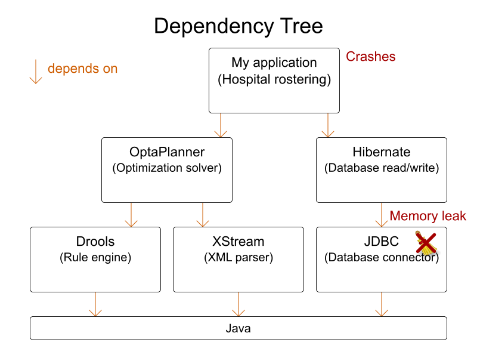
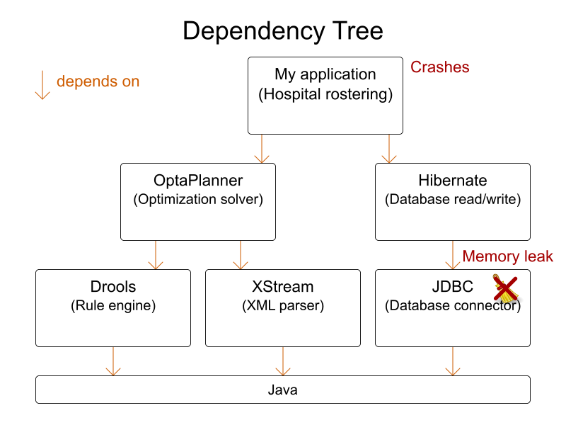
Depend only
on mature projects
What makes
(Open Source) projects
mature?
What makes (Open Source) projects mature?
1. License
IANAL

What is Open Source?
- Source code included
- Free redistribution
- Right to modify
- No fields of use restrictions
- ... (see opensource.org)
⇒ Formalized by a License

Don't sell Alice Cooper merchandise!
Normal Open Source licenses
- MIT
- BSD
- ASL: Apache License
- MPL: Mozilla Public License
- EPL: Eclipse Public License
- LGPL: Lesser General Public License
- GPL: General Public License
- AGPL
Avoid other Open Source licenses.
Make 2 lists of licenses
- Whitelist: approved by legal
- Blacklist: rejected by legal
- Other: ask legal before importing
FAQ
- Isn't OpenJDK (Java) GPL?
- GPL with classpath exception
- Does not affect normal Java code
- Isn't GCC (the C++ compiler) GPL?
- Does not affect your compiled code
IANAL
I am not a lawyer
All licenses (open source or proprietary)
include legal uncertainty
until tried in court.
Red Hat includes indemnification for its customers.
What makes (Open Source) projects mature?
2. Distribution and download
Recent stable release
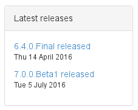- There is a stable release
- Stable releases: Final, GA
- Unstable releases: Alpha, Beta, CR, RC, Milestone
- Released in the last year
- 8% out of 500 000 tracked open source projects
(according to openhub.net in 2012)
- 8% out of 500 000 tracked open source projects
Available on central repository
- Java: in Maven Central repository
- Bad name: Gradle, Ivy and Buildr use it too
- .NET: in NuGet Gallery
- Ruby: in rubygems.org
Similar to Android's Play store, IPhone's App store,
Fedora's rpm repository, Ubuntu's deb repository, ..
search.maven.org / mvnrepository.com
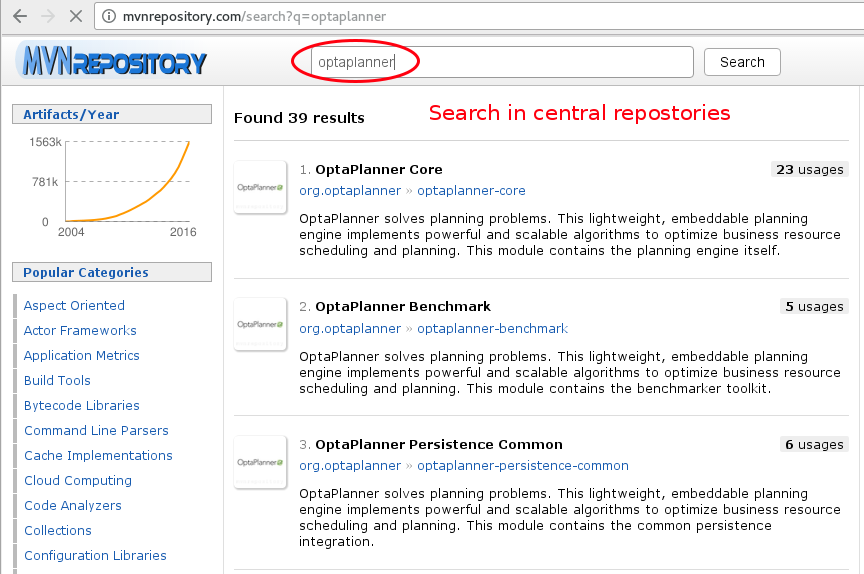What makes (Open Source) projects mature?
3. Source control
Source Control
- Stored in
- Git
- Mercurial
- Subversion
- Fork unfriendly ⇒ collaboration unfriendly
- Hosted on
- GitHub.com
- Bitbucket.org
- GitLab.com
GitHub commit history
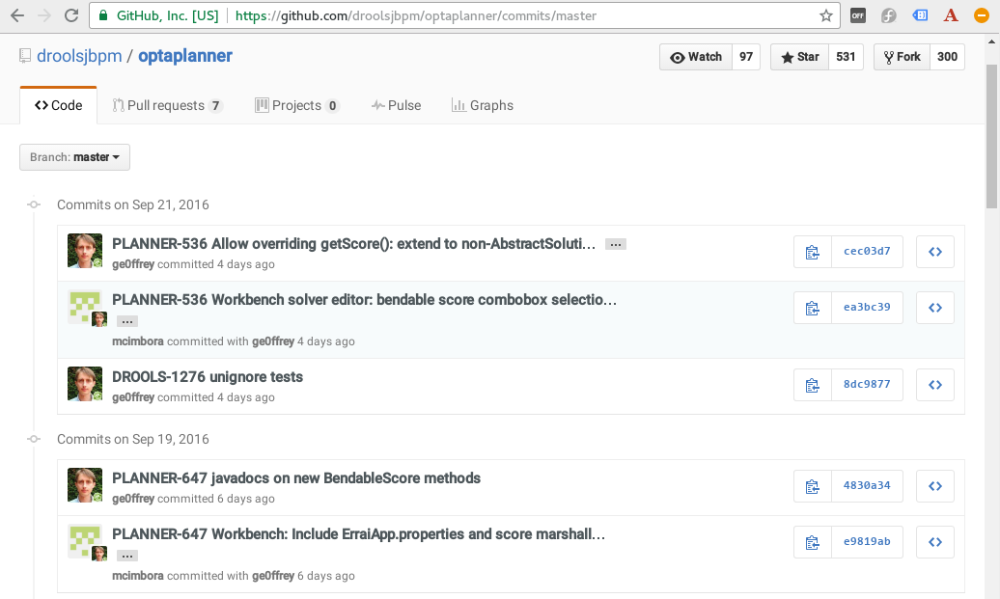Easy to build from source
$ git clone https://github.com/droolsjbpm/optaplanner.git
...
$ cd optaplanner
$ mvn clean install -DskipTests
...Fork it!
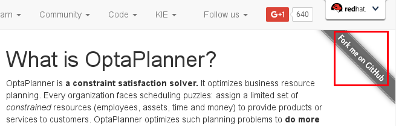My fork = my personal sandbox
Easy to fork
Blessed (official releases):
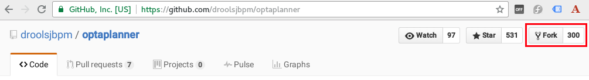My fork:
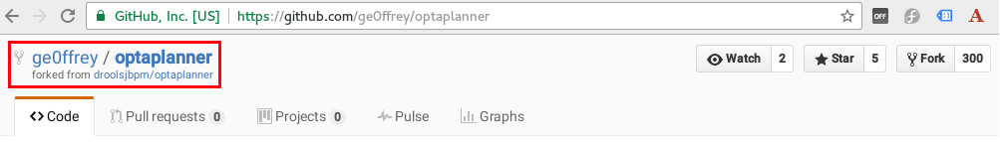My changes do not affect blessed.
Easy to pull new commits from blessed.
Why share your modifications?
- Reduce maintenance
- Your modifications are in all future releases
- No merging with upstream changes
- No need to do releases
- Get feedback from project committers
- Gain respect (= power in a meritocracy)
How do you share your modifications?
- Patch file
- Goes stale
- No review support
- Pull Request
- Send Pull Request
- Committers review it
- Fix review comments
- Committers merge it in blessed
List of Pull Requests
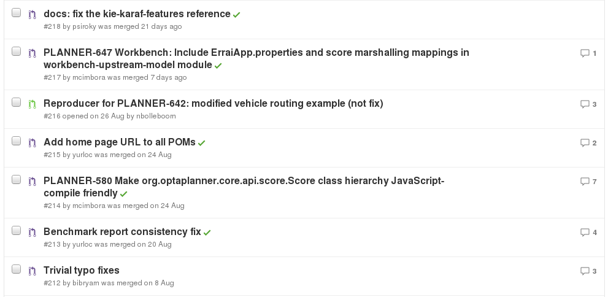Review
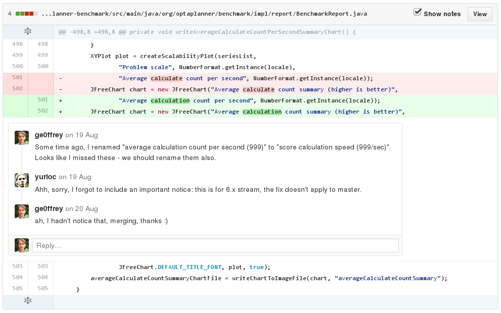Merge a Pull Request
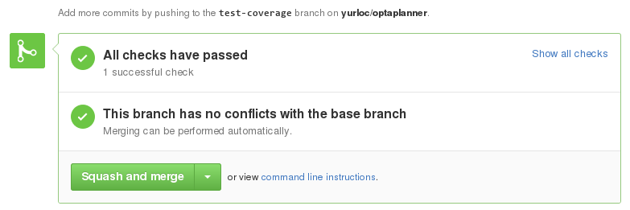Fork merged to blessed
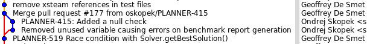What makes (Open Source) projects mature?
4. Business model
Governance
Who controls an Open Source project?
Communication
- Issue tracker
- Mailing list
- Use gmane.org (NNTP or web) to avoid flood
- IRC (90's chat, like Slack)
- Most Open Source projects are on Freenode
- Bot mentions new commits/issues ⇒ sparks discussions
- Video conferencing for complex discussions
Healthy Open Source project
- Some of the committers needs to be payed
to work on it full time. - Possible to buy support
Governance models
- Multi-company model
- Apache Foundation
- Eclipse Community
- One-company model
- Red Hat
- Pivotal
- Oracle
- Docker Inc.
- ...
Apache Foundation / Eclipse Community
- Neutral ground
- Infrastructure sponsored
- No dictator
- Voting system:
- +1: Do the change
- +0: I don't care
- -1: I veto the change (requires motivation)
- Politics can kill successful projects
- Log4J 1.x died when main committer got veto'ed
- Maven 3 flatlined after dispute
with main contributing company (now mostly fixed)
One company model
- Clear, sustainable business model
- Paid full-time committers
- Fear of fork reduces power abuse
- OpenOffice got forked as LibreOffice
- Hudson got forked as Jenkins
- Often benevolent dictator (project lead)
- Listens to company and community
- Potential conflict of interest
- Depends on the business model
- Balancing act for project lead
Open Source business models
- Dual-licensing (GPL/proprietary)
- MySQL
- Sell proprietary enterprise features
- IntelliJ
- Sell support/consultancy
- All Red Hat projects
- IBM projects
- Most Apache projects
- Get contributions on not core business software
- Google projects
- Facebook projects
What makes (Open Source) projects mature?
5. Everything that makes proprietary projects mature
Typical quality indicators
- Unit tests
- Test coverage
- Continuous integration
- Documentation
Is Open Source better than proprietary?
Depends on the project!
Summary
Summary
- Reuse is better than writing it yourself
- Have only mature projects in your dependency tree
- Look for maturity indicators
- Open Source projects can't hide them
Q & A
| Slides | ge0ffrey.github.io/ge0ffrey-presentations/ |
|---|---|
| OptaPlanner | www.optaplanner.org |
| Red Hat | www.redhat.com |
| Feedback | @GeoffreyDeSmet |